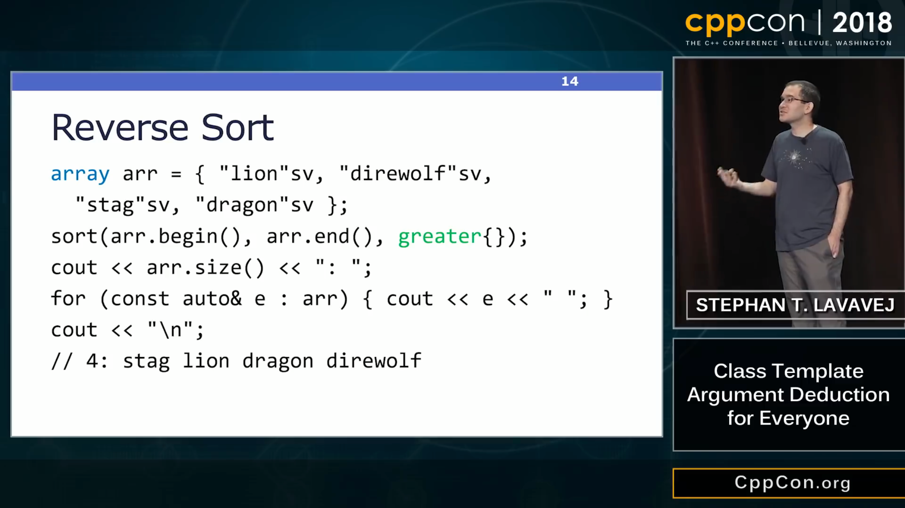

Intel Contributes Its Parallel STL Implementation To LLVM
Oh DeaR
Rant alert: C++ error handling
Reddit: https://www.reddit.com/r/cpp/comments/ae60nb/decades_have_passed_standard_c_has_no_agreed_and/
I think the problem really stems from the places where exceptions don't work well. Otherwise I'd use them all the time. <...> E.g. im working on an app using actors which send messages back and forth. Throwing an exception in the message handler may mean something but it certainly isn't going to automatically make its way back to it's source.
FYI Outcome and std::expected<T, E> have diverged by a fair bit <...>. They are now two differing interpretations of how best to implement exception-less failure handling. There is a third approach proposed for Boost as well, called LEAF.
Game Programmers and the C++ collapse
Game Programmers and the C++ collapse by Alexis Breust
Let's focus on why C++ is slowly digging his own grave.
C++ is too slow to compile.
Rainbow Six: Siege (8 millions C++ LOC) in 3 minutes. That's extremely slow!
Fact is Modern C++ is just growing up so much it will soon collapse under its own mess.
Gamedev C++ coding decisions (in 2014)
Nicholas Fleury, CppCon 2014:
- No RTTI: you prefer to control the memory details yourself.
- No exceptions: they are simply slow because of the constraints of unwindable stack at any time.
- No STL containers:
std::vector is slow, and complex template code takes time to compile.
- No Boost: surely the library is impressive, but it's never a good idea to use it in serious applications.
- Very small subset of templates: use it at mininum as it increases compile times significantly.
New languages for gamedev:
- Jai (a better C) by Jonathan Blow (still unreleased)
- Odin (based on Jai)
Orthodox C++ (!)
Orthodox C++: what should I use?
- Branimir Karadzic:
- C-like C++ is good start, if code doesn't require more complexity don't add unnecessary C++ complexities. In general case code should be readable to anyone who is familiar with C language.
- The design rationale in Orthodox C++ should be "Quite simple, and it is usable. EOF".
- Don't use exceptions.
- Don't use RTTI.
- Don't use C++ runtime wrapper for C runtime includes (<cstdio>, <cmath>, etc.), use C runtime instead (<stdio.h>, <math.h>, etc.)
- Don't use stream (<iostream>, <stringstream>, etc.), use
printf style functions instead.
- Don't use anything from STL that allocates memory, unless you don't care about memory management.
- Don't use metaprogramming excessively. Use it in moderation, only where necessary, and where it reduces code complexity.
- Wary of any features introduced in current standard C++, ideally wait for improvements of those feature in next iteration of standard. Example:
constexpr from C++11 became usable in C++14 (Jason Turner)
Orthodox C++: Other efforts
Why I don't spend time with Modern C++ anymore
- Why I don't spend time with Modern C++ anymore by Henrique Bucher, ED, JP Morgan (!) (Original)
- Performance loss, optimization difficulties
- Slow build times
- Complexity and maintainability
- Quotes:
- If you cannot figure out in one minute what a C++ file is doing, assume the code is incorrect.
- C++ today is like Fortran: it reached its limits.
- Today the “Modern Technologist” has to rely on a new set of languages: Verilog, VHDL.
- Vitorian LLC – we help businesses design, architect and build ultra-low-latency systems (ka-ching!)
- Discussions:
CppCon 2018: Stephan T. Lavavej “Class Template Argument Deduction for Everyone”
CppCon 2018: Stephan T. Lavavej “Class Template Argument Deduction for Everyone”
CppCon 2018: Stephan T. Lavavej “Class Template Argument Deduction for Everyone”
CppCon 2018: Stephan T. Lavavej “Class Template Argument Deduction for Everyone”

CppCon 2018: Stephan T. Lavavej “Class Template Argument Deduction for Everyone”
CppCon 2018: Stephan T. Lavavej “Class Template Argument Deduction for Everyone”
CppCon 2018: Stephan T. Lavavej “Class Template Argument Deduction for Everyone”
CppCon 2018: Stephan T. Lavavej “Class Template Argument Deduction for Everyone”
CppCon 2018: Stephan T. Lavavej “Class Template Argument Deduction for Everyone”
CppCon 2018: Stephan T. Lavavej “Class Template Argument Deduction for Everyone”
CppCon 2018: Stephan T. Lavavej “Class Template Argument Deduction for Everyone”

CppCon 2018: Stephan T. Lavavej “Class Template Argument Deduction for Everyone”
CppCon 2018: Stephan T. Lavavej “Class Template Argument Deduction for Everyone”
Returning values in parentheses
Quote
The 'S' in IoT stands for 'Security'.